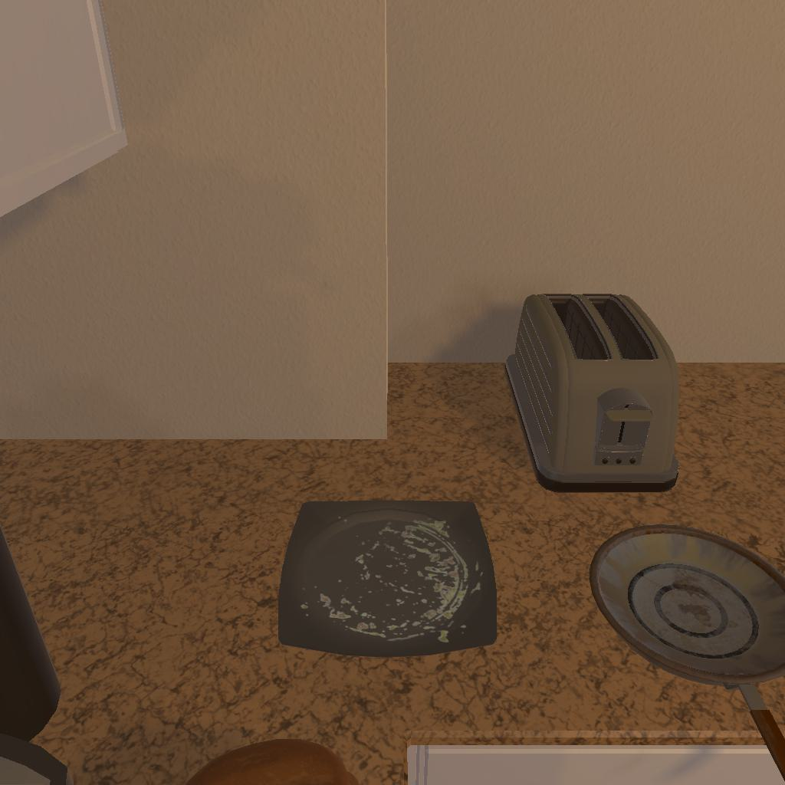

---------------------------------------------------------task: 13---------------------------------------------------------
--------------------------------------------------------------------------------------------------------------------------------------------------------------------
--------------------------------------------------------------------------------------------------------------------------------------------------------------------
Step:--------------------------------------------------------------------------11-------------------------------------------------------------------------------
----------------------------------------
VLM Prompt:
Image1:
Image2:
Image3:
**Instruction**
1. Analyze the provided images to identify all visible household objects and compare the difference between images (e.h. whether the object is opened or not and taken on hand or not), focusing on those relevant to the task description "put a clean tomato in garbagecan."
2. Use the analysis of images and the task hint "The agent must find an object of the desired type, pick it up, go to a sink or a basin, clean the object with a sink or basin, and then find the correct location to place it and put it down there. The agent does not need to use soap bottle or faucet to clean the object, and the agent just needs to do action that is "clean the object with the sink or sink basin"." to answer the question: what is the most reasonable action in the choices for the task description "put a clean tomato in garbagecan"?
3. Decide and write the answer using the template: The answer is: (i): , where i is the real number. If there is no desired object in images, search every place based on **Initial Observation** to find the object. And if no one is exactly correct, choose a similar answer.
**Initial Observation**
You are in the middle of a room. Looking quickly around you, you can see countertop (1-2), cabinet (1-11), garbagecan (1), toaster (1), sinkbasin (1), fridge (1), sink (1), microwave (1), drawer (1-3), stoveburner (1-4), coffeemachine (1), diningtable (1)
**Answer Choices**
(1): go to cabinet 1
(2): go to cabinet 2
(3): go to cabinet 3
(4): go to garbagecan 1
(5): go to cabinet 4
(6): go to toaster 1
(7): go to sinkbasin 1
(8): go to cabinet 5
(9): go to microwave 1
(10): go to countertop 2
(11): go to cabinet 6
(12): go to cabinet 7
(13): go to drawer 1
(14): go to stoveburner 1
(15): go to stoveburner 2
(16): go to cabinet 8
(17): go to drawer 2
(18): go to stoveburner 3
(19): go to stoveburner 4
(20): go to coffeemachine 1
(21): go to cabinet 9
(22): go to cabinet 10
(23): go to cabinet 11
(24): go to diningtable 1
(25): go to drawer 3
(26): open fridge 1
(27): close fridge 1
(28): take bread 2 from fridge 1
(29): take cup 1 from fridge 1
(30): take cup 2 from fridge 1
(31): examine fridge 1
**Answer**
Let's think step by step by following the instructions.
----------------------------------------
----------------------------------------
Original Response:
Firstly, we are looking for a tomato, and none of the images show a tomato. Therefore, we need to search for it based on the initial observation locations that have not been visually confirmed yet.
The task description mentions "put a clean tomato in garbagecan," so we need to find the tomato first, clean it, and then put it in the garbage can. Since we don't see a tomato in the images, we can rule out choices that involve interacting with objects already visible (e.g., go to toaster 1, go to sinkbasin 1, etc.).
The most likely places to find a tomato would be in the fridge or a cabinet where food is usually stored. Since the fridge is one of the unconfirmed locations from the initial observation, and it's common to store tomatoes in the fridge, the next reasonable action would be to open the fridge to look for the tomato.
The answer is: (26): open fridge 1.
----------------------------------------
----------------------------------------
>>> Refine Original VLM Response and Get Pure Action: open fridge 1
----------------------------------------
-----------------------------------------------------------------
Running time: 18.73667025566101 seconds
Total Money: 7.333230000000007
-----------------------------------------------------------------
-----------------------------------------------------------------
Text Observation:Nothing happens.
-----------------------------------------------------------------
UNSUCCEED